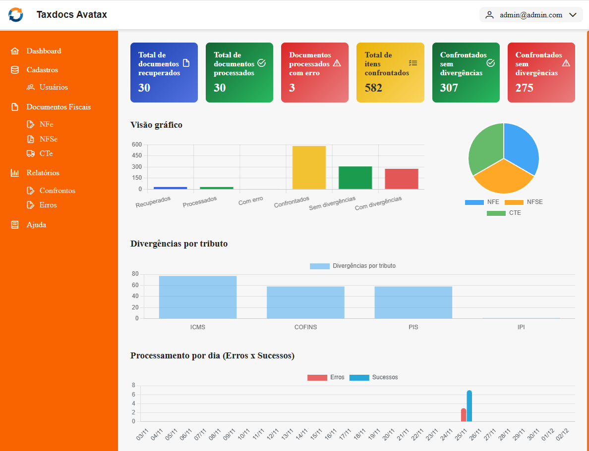

Integrador Taxdocs Avatax
Manual do usuário |
Visão geral do sistema Integrador Taxdocs X Avatax
O Integrador Taxdocs × Avatax, desenvolvido pela Vetor IT, é uma solução corporativa criada para automatizar, padronizar e dar transparência ao processo de consulta, validação e confronto de documentos fiscais.
Seu propósito central é conectar-se ao sistema Taxdocs, utilizando as credenciais fornecidas pelo cliente, recuperar os documentos fiscais autorizados e submetê-los às validações específicas realizadas por um sistema terceirizado: o Avatax, solução fiscal de propriedade da empresa Avalara.
Após a submissão:
- O Avatax processa cada documento e retorna uma versão enriquecida, contendo cálculos e validações fiscais.
- O Integrador Taxdocs × Avatax compara automaticamente o documento original (obtido do Taxdocs) com o documento validado (retornado pelo Avatax).
- O sistema identifica, classifica e registra possíveis divergências, permitindo ao cliente agir de forma rápida e fundamentada.
Além disso, o Integrador disponibiliza relatórios detalhados, que evidenciam diferenças encontradas, indicadores de processamento, erros e estatísticas gerais, auxiliando as áreas fiscal e contábil na tomada de decisões e na regularização de inconsistências.
Em resumo, o Integrador Taxdocs × Avatax oferece:
- Automação completa do fluxo de integração Taxdocs → Avatax → Integração interna
- Confronto automático de dados fiscais
- Rastreabilidade total do processo
- Relatórios analíticos e gerenciais
- Redução de esforço manual e de erros operacionais

Os tópicos a seguir, descreverão de forma , cada funcionalidade do sistema Integrador Taxdocs × Avatax.
Pré-requisitos
Created with the Personal Edition of HelpNDoc: Easy CHM and documentation editor